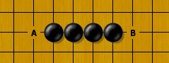

双线五子棋
#1 双线五子棋 作者：日出333 发表时间：2010-9-22 23:38:22
规则（已简化，未尽事宜请自己补充）：
一、连五嬴。
二、空枰开局，黑先下一颗子，然后双方轮流下子，每次两颗。
即：黑 1 白 2 白 2 黑 3 黑 3 白 4 白 4 黑 5 黑 5 ……（双步）
三、同一手棋内的两颗棋子，不能在同一直线上。
例如：两颗白 2 不能同线；两颗黑 3 不能同线……（双线）
#2 双线五子棋取胜的条件 作者：日出333 发表时间：2010-9-22 23:44:48
双线五子棋取胜的条件
粗粗一看，每次下两子，似乎只有“三头蛇”（例如 3 个眠四、活四加眠四等）才能取胜，
其实不然，在双线规则下，有部分“两头蛇”利用禁手，也能取胜：
例如下图的“活四”就能取胜，因为白棋不可以同时挡 A 、 B 两点。也正因如此，对方活三的时候，一般都要挡一边。

又见下图，黑棋下 A 、 B 两子，形成必胜的“四三”形，因为白棋挡住 C 点后，不能再挡 D 点或 E 点。下一手黑棋活四就嬴。同理，类似的“三三”也有可能为胜形。
#3 Re:双线五子棋 作者：超级大大师 发表时间：2010-10-1 13:13:49
这不是六子棋吗，老程。
#4 Re:双线五子棋 作者：日出333 发表时间：2010-10-9 2:25:24
楼上到底扫了几眼帖子呢。。。这问题，问得太粗心了。。
另外，很好奇——能叫得出我名字的人不多，你是？
（纯粹出于好玩才发表此文，没想到这里都没爱玩的人 ）
）
#5 Re:双线五子棋 作者：日出333 发表时间：2010-10-31 23:31:05
最近几天在网上邀请双线五子棋的原作者okjb下了两盘，如下：
第一盘黑嬴
http://brainking.com/cn/ArchivedGame?g=4855619
第二盘白嬴
http://brainking.com/cn/ArchivedGame?g=4859396
蛮好玩的 

继续飘过。。。
#6 Re:双线五子棋 作者：许相公 发表时间：2010-11-30 20:23:41
 楼主你厉害，回去学习去
楼主你厉害，回去学习去
#7 Re:双线五子棋 作者：皮皮虾 发表时间：2010-12-1 13:51:13
不论，好坏。对楼主的客观求证精神。表示支持。楼主加油#8 Re:双线五子棋 作者：蓝天蓝 发表时间：2010-12-2 16:11:35
也玩过几次，这样的玩法很好玩#9 Re:双线五子棋 作者：jiao 发表时间：2010-12-4 1:03:19
很好玩!十分容易踩地雷!有意思!有意思!#10 Re:双线五子棋 作者：儒释道 发表时间：2010-12-5 20:09:28
这个规则很好玩，到处都是“禁”。喜欢抓禁的可以抓个够。不过，一切违背了“以先连五者胜为唯一胜法”的规则都是五子棋的变种。#11 在线对弈双线五子棋 作者：日出333 发表时间：2010-12-6 13:36:18
好消息！
已经有双线五子棋的在线对弈房间了：
http://www.renrousousuo.com/DoubleLine.aspx
［此帖子已被 日出333 在 2010-12-6 13:39:36 编辑过］
#12 Re:双线五子棋 作者：陈唯一 发表时间：2010-12-6 20:14:40
我也去看看，#13 Re:双线五子棋 作者：蓝天蓝 发表时间：2011-1-30 9:54:04
双线五子棋跟普通五子棋的思路还是区别挺大的，不过双线五子棋真的很好玩，一般抓禁胜出的时候多，处处都可以设计抓禁#14 Re:双线五子棋 作者：蓝天蓝 发表时间：2011-5-19 23:57:45
双线五子棋必胜的棋形：
1、冲四+2个活三
2、3 个活三
3、2个冲四，他们是连五点在一条线上
4、2个活三，2个活三延伸交点在一条线上 如下：
http://www.renrousousuo.com/Review/DoubleLine.aspx#id=282
5、一直43就贏
［此帖子已被 蓝天蓝 在 2011-5-19 23:58:35 编辑过］